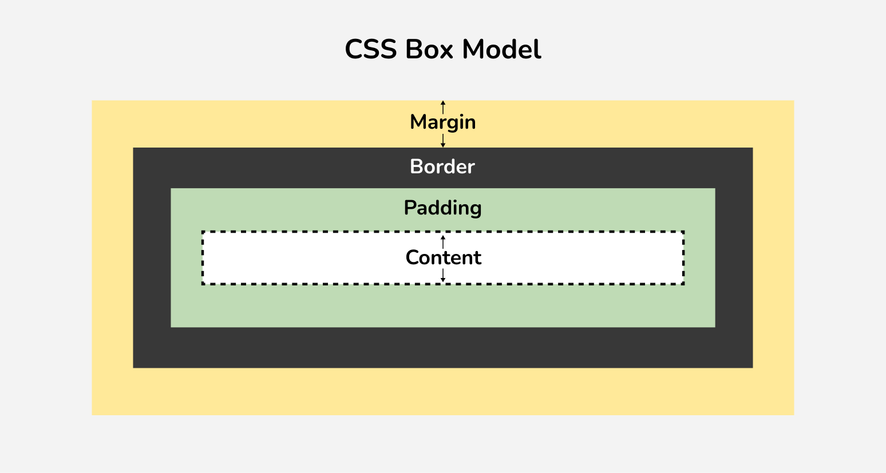
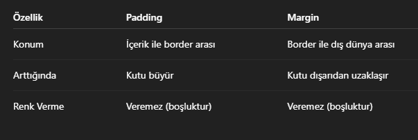
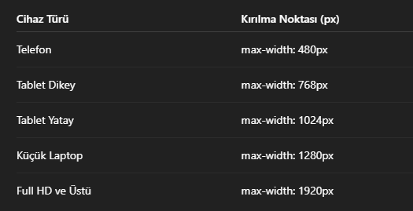
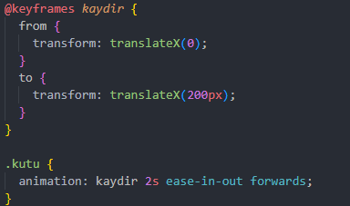
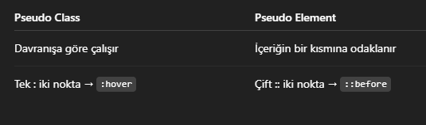

CSS'e Giriş
Ey kral!
HTML'i yazdın, güzel... Ama bir sıkıntı var: Sayfa kupkuru, ruhsuz,
sanki köyden yeni gelmiş gibi sade. İşte o ruhu, şekli, şemali CSS
verir! Yani sitenin Saçıdır, sakalıdır
CSS Ne Demek?
Açılımı: “Cascading Style Sheets” Türkçesi Basamaklı Stil Şablonları
CSS Ne İşe Yarar?
✅Renk verir: Sayfaya renk katar
✅Font değiştirir: Yazıyı
sıklaştırır,süsler
✅Kutulara şekil verir: Border, Shadow,
Radius ne istersen...
✅Sayfayı ortalar, hizalar, kısacası
ADAM EDER!
CSS Nasıl Eklenir
CSS üç Şekilde eklenebilir
-
İnline CSS:Acil durumlarda çaktırmadan yapılan değişiklikler.
direkt etiketin içine yazılır mesela <p style="color:red;">
Ama fazla yapılması tavsiye edilmez ileri seviye projelerde karışıklığa neden olur - İnternal CSS: Kafa karıştırmaz ama büyük projelerde karışıklığa sebep olabilir head kodu içerisine style ile yazılır
-
External CSS: Kral işi budur. Ayrı bir .css dosyasına yazılır,
tertemiz... HTML dosyasına uygulamak içinse head içerisine
<link rel="stylesheet" href="style.css"> yazarak uygulanır
style içerisine kodlar örnegin şu şekilde yazılır
p {
Color:red;
}
CSS Seçiciler
CSS Seçiciler, HTML sayfasında hangi elemanın süsleneceğini belirlemek için kullanılır. Düşün ki kalabalık bir ortamdasın ve birine sesleneceksin. Doğru kişiyi seçmezsen ya kimse dönüp bakmaz ya da yanlış kişiye laf gitmiş olur. CSS’de de aynı mantık geçerli.
Temel Seçiciler
-
Etiket Seçici
örnegi:
p {
Color:red;
}
Burada sayfamız içerisindeki tüm p etiketlerine kırmızı rengi verdik -
Class Seçici
Noktayla seçilir örnegin
.kral {
color:blue;
font-weight:bold;
}
Burada sayfamız içerisinde sadece kral class'ına sahip olan etiketi seçtik yani yazdıgımız kodlar sadece o etikete uygulanacak
diyelim sayfamızdaki bir p etiketini digerlerinden farklı bir renk yapmak istiyoruz bunun için o etikete bir class vermeliyiz örnegin
<p class="kral">Bu bir paragraf</p> -
ID Seçici
eşsizdir yani bir sayfada aynı ID'ye sahip tek bir etiket olabilir ID "#" işaretiyle yazılır aşagıda örnek bir ID ve etiket içerisinde yazılışı verilmiştir
#ozel {
color:red;
}
yukarıda sadece ozel ID'sıne sahip olan etiketi kırmızı yaptık etiket içerisinde uygulanışı ise şöyledir <p id="ozel">Bu bir paragraf</p> -
Universal Seçici
Yıldız "*" işareti ile kullanılır. Bu seçici sayfa içerisindeki tüm etiketlere uygulanır genelde içerisinde şu üç kod bulunur
*{
margin:0;
padding:0;
box-sizing:border-box;
}
Dikkat edilmesi gerekenler
- Aynı ID'den sadece bir tane olabilir
- Class birden çok olabilir
Renkler ve Arka Planlar
Kral, HTML yazdık, seçiciyi öğrendik… Ama bir sorun var: Sayfa simsiyah beyaz, hani memur evine dönmüş gibi. İşte burada CSS renkleri ve arka planları devreye girer. Sayfayı renklendirir, şekillendirir, göz boyar—ama iyi anlamda
Renk Nasıl Verilir?
-
İsimle Renk Verme
p {
color:red;
}
Bu klasik isim verme şeklidir "red","blue","green" gibi direkt isimler kullanılır -
Hex Kodlarıyla
h1 {
color:#ff6600;
}
Burada işin rengi degişir: Her rengin bir #kodu vardır.
Dikkat! # Kullanmassak kod işe yaramaz -
RGB ile
div {
color: rgb(255,0,0);
}
sırayla kırmızı, yeşil , maviyi temsil eder -
RGBA
div {
color:rgba(255,0,0,0.5)
}
Bu kodun RGB'den tek farkı şeffaflık ayarıdır aynı renk uygulanır sadece daha şeffaf haliyle görünür
Arka Plan Vermek
-
Arka Plan Rengi Verme
body {
background-color: #ff8800;
}
body'nin arka plan rengini degiştirir -
Arka Plana Resim Koyma
body {
background-image: url("resim.jpg");
}
url içerisinde yolunu belirledigimiz resmi arka planda açar -
Pozisyon ve Tekrar Ayarları
body {
background-repeat: no-repeat;
background-position:center;
background-size:cover;
}
şimdi tek tek yazdıgımız kodları açıklayalım
Arka Plana yükledigimiz fotograf içerikten küçük olursa default olarak resim aynısını tekrar ederek içerigi doldurur genelde bunun olmasını istemeyiz bu yüzden no-repeat komutunu kullanırız yani resme tekrar etme deriz
bir diger komut iste background-position:center komutu bu komut ismi gibi yükledimiz içerigi yazdıgımız etikette ortalar
Son olarak background-size:cover bu komut ise yükledigimiz elemanın içerigi tamamen kaplamasını saglar
Yazı Tipi ve Metin Stilleri
Kral şimdi renkleri verdik, arka planları döşedik ama bir eksik var: YAZILAR! Yani o
paragraf denen düz yazılar hâlâ lisede fotokopi notu gibi. Hadi gel şekil verelim.
Yazı Tipini Degiştirme
body {
font-family: Arial, sans-serif;
}
yani sayfadaki tüm yazıların yazı tipini Arial olarak degiştirdik
Yazı Büyüklügünü Degiştirme
h1 {
font-size:36px;
}
Yukarıda sayfadaki tüm h1 etiketlerinin font Büyüklügünü
degiştirdik
Yazı Kalınlıgı
h2 {
font-weight:bold;
}
uygulandıgı içerikteki yazıyı kalın yapar default olarak normal'dir
daha kalın olmasını
istersek 100-900 arası sayılar verebiliriz (700=bold)
Yazı Stili
p {
font-style: italic;
}
Yazıyı italik yapar
Metin Dekorasyonu
a {
text-decoration:none;
}
link etiketleri default olarak altı çizili yazılırlar text-decoration:none; alt çizgiyi
kaldırmak için kullanılır
alta çizgi eklemek için none yerine underline yazılmalıdır
Metin Hizalama
p {
text-align:
}
aşagıda örnek kullanılışı verilmiştir
text-align:Left
text-align:Right
text-align:Center
text-align:Justify
Harflerle Oynama (Büyütme, Küçültme, Aralama)
p {
text-transform: uppercase;
letter-spacing: 2px;
}
text-transform: Yazının hepsini büyük, küçük veya normal yapmak için kullanılır
letter-spacing: Harfler arasını açar, metni ferahlandırır aşagıda text-transform ve
letter-spacing uygulanmış örnek bir metin bulunmaktadır
Ben bir paragrafım
yukarıdaki paragrafta letter-spacing 5px verildi bu yüzden aralık çok fazla göründü ayrıca text-transform:uppercase; kullanıldı
Kutu Modeli
Kral, CSS dünyasında her şey bir kutu. Yazı da kutu, resim de kutu, buton da kutu…
Yani bildiğin dünya kutudan ibaret! (İlber Ortaylı gelse o da bunu derdi)
Buna Box Model deniyor. Her element, görünmese de aslında bir kutu içinde duruyor.
Kutu Modelinin Katmanları
- Content: Yazı,resim,ikon... Yani kutunun içindeki esas içerik
- Padding: içerik ile kenarlar arasındaki mesafe
- Border: Kutunun çevresindeki kenarlık
- Margin: Kutunun dış dünyayla arasındaki mesafe. diger kutularla iç içe girmemesi için kullanılır
yukarıdaki anlatımın görselini görürsek çok daha iyi kavrayabiliriz

Son olarak Herkesin bilmesi gereken kod
box-sizing:border-box;
bunu yazarsak
padding ve border kutunun dışına taşmaz. Bu yüzden her sayfanın olmazsa olmazıdır ve
bu yüzden her sayfanın başında "*" seçicisinde kullanılır
Margin & Padding (Araya Mesafe Koyma Sanatı)
Kral bak, CSS'te her şeyin bir mesafesi, bir nefes alanı olmalı. Her kutu üst üste binip kavga ederse sayfan dağılır. İşte burada devreye margin ve padding giriyor.
Padding
p {
padding:20px;
}
yazının etrafında yastık gibi boşluk oluşturur kodun yazılmış hali aşagıda bulunuyor
Benim Padding'im 20px
Margin
Kutunun diger kutulara veya sayfanın kenarına olan uzaklıgına denir
div {
margin:30px
}
şimdi örnegi kullanalım
Gördügümüz üzere içerikle diger tüm herşey arasında 30px boşluk bıraktı
şimdi aşagıda margin ve paddingi tanıtan bir tablo verelim
Şimdi birde padding ve margini belli kısımlara yani sag,sol,yukarı ve aşagı uygulama
komutlarına geldik bu komutlar saat yönüne göre yazılır aşagıda örnek bir komut verdik
padding: 10px 20px 15px 5px; yani
10px yukarı
20px saga
15px aşagı
5px sola
padding uyguladık aynısı margin içinde kullanılır
Bonus
Margin ile bir kutuyu ortalamak istersek
margin: 0 auto;
komutunu
kullanırız burada yukarı ve aşagıya 0 margin yanlara eşit miktarda margin olması
gerektigin yazdık hatta aşagıda bir örnek'te verelim
Border ve Border-Radius
Kral, kutuyu koyduk, margin-paddingle ayarını yaptık ama… Bu kutu hâlâ sıska, ruhsuz, kenarsız bir kutu! İşte şimdi border ve border-radius ile kutuya can veriyoruz, şekil veriyoruz!
Border Nedir?
Border = kutunun sınırları, çerçevesi, kenarı. yani "ben buradayım" diyen çizgi
Temel Yazımı
div {
border: 2px solid black
}
Anlamı
- 2px → Kalınlık
- Solid → Düz çizgi(dashed, dotted gibi degerler'de verilebilir)
- Black → Renk
Border Çeşitleri
Solid → Düz çizgi
Dahsed → Kesik çizgi (----)
Dotted → Noktalı çizgi
(o o o)
Double → Çift çizgi
none → Kenarsız
Kenarları belirlerken hep tüm kısımlara göre yazdık ama istersek tek tek
kenarlarıda ayarlayabiliriz mesela
p { border-top: 3px dashed red;}
Sadece üst kenarı 3px ve kırmızı yapar
p { border-right: 2px solid blue;}
Sadece sag kenarı 2px ve mavi yapar
p { border-bottom: 5px dotted green;}
Sadece alt kenarı 5px ve yeşil yapar
p { border-left: none;}
eger başka bir kısıma kenar verdiysek sol kısımda
kenar istemiyorsak bu şekilde yazabiliriz
Border-Radius Nedir?
Border-radius = Kutunun köşelerini yuvarlar, sert hatları yumuşatır
Aşagıda
Border radius verilmiş bir örnek bulunuyor
div {
border-radius:20px;
}
istersek kutuyu border-radius:50%; ile tam yuvarlak'da yapabiliriz tıpkı aşagıdaki örnek gibi
Gölge Efektleri
Kral, hayat gölgesiz olur mu? Olmaz. Gölge → Derinliktir, karizmadır, boyuttur. İşte CSS’te de bu işi box-shadow ve text-shadow yapar. Bir kutuya, bir yazıya gölge verdin mi → Site bir anda 3D gibi olur, parmakla gösterirler.
Kutuya Gölge Verme
div {
box-shadow:3px 5px 15px rgba(0,0,0,0.5)
}
Şimdi sırayla açıklayalım
- 3px: Saga Kaydırma
- 5px: Aşagı Kaydırma
- 15px: Bulanıklık
- rgba: Renk + Saydamlık
Box-Shadow İpuçları
-
Dış Gölge box-shadow: 0 0 10px #333 Dış Gölge
- İç Gölge box-shadow: inset 0 0 10px #333
İç gölge
İnset koyarsak içe dogru gölge verir, kutunun içi parlamış gibi olur.
Text Shadow (Yazıya Gölge Verme)
h2 {
text-shadow; 2px 2px 5px rgba(0,0,0,0.5)
}
text-shadow; 2px 2px 5px rgba(0,0,0,0.5)
Yazı bir anda daha net, daha çekici görünür
İlginç Gölge Kombinasyonları
div {
box-shadow: 2px 2px 5px red, -2px -2px 5px blue;
}
Gölgelendirmelerde sırayla Saga ve aşagı kodlarını yazarbiliyorduk aynı zamanda bunların negatif halinide yazabiliriz mesela
Display ve Visibility
Kral, CSS’te bazen bir şeyi göstermek istersin, bazen de “yokmuş gibi” davranmasını… İşte burada display ve visibility devreye girer. Biri görünürlüğü, diğeri davranışı kontrol eder. Bir nevi sitenin “ben varım ama yokum” ya da “yokum ama varım” havasını ayarlarsın
En Meşhur Display Türleri
- Block
- İnline
- İnline-block
- None
- Visibility Nedir?
Block display'li elementler her zaman tüm genişligi kaplarlar ve diger elemanları satır alta iterler mesela
Display block bir paragraf
Paragraf zaten default olarak block displaya sahiptir block yapıya ayrıca sahip olan kodlar ise <div>, <p>, <h1>'dir
yanyana gelebilen etiketlerdir örnegin <span>, <a>, <strong> ...
İnline İnline İnlineYukarıda 3 tane etiketi'de yanyana yazdık ama İnline elementler oldukları için yanyana sıralanabildiler şimdi denemek için block elementleri yanyana yazalım
Block
gördügünüz gibi block elementler tüm satırları kapladılar
Hem yan yana durup hem'de boyut alabilirler
Yukarıdaki etiket block bir etiket olan div'di ama display:İnline-block; yaparak şeklini degiştirmiş olduk
Son olarak None degerimiz var bu değer ismi gibi verdigimiz elemeti görünmez kılar Ne görünür ne de yer kaplar a
Visibility:hidden ile Elemanı görünmez yapabilir ama içerik kapladıgı yerde kalmaya devam eder yani içerik görünmez ama hala yer kaplamaya devam eder
Sayfa Bölümleri
Flexbox (Kutuları Dize Getirme Sanatı 🔥)
Kral, Flexbox CSS’in kung-fu tekniğidir. Daha önce “bu kutular niye yan yana gelmiyor?” dedin mi? İşte cevabı burada: Flexbox.
Eskiden millet “float” falan kullanırdı, sonra Flexbox geldi, hepsi tarih oldu.Flexbox → Kutulara asker gibi hizaya gir der, onlar da itaat eder.
Flexbox Nasıl Başlar? (display: flex;)
div {
display:flex;
}
Artık içindeki çocuklar inline gibi yan yana durur ama bir yandan da block gibi büyür küçülür. Çok yönlü, kral gibi davranırlar.
Ana Ayarlar
-
justify-content: YATAY Hizalama (Sağa, Sola, ortaya )
justify-content: flex-startjustify-content: flex-startjustify-content: flex-start
justify-content: flex-endjustify-content: flex-endjustify-content: flex-end
justify-content: centerjustify-content: centerjustify-content: center
justify-content: space-betweenjustify-content: space-betweenjustify-content: space-between
justify-content: space-aroundjustify-content: space-aroundjustify-content: space-aroundÖnemli olan şey display ile sıralamak istedigimiz elemanın parent elemanına yani kapsayan elemanına flex kodlarını uygularız elemanın kendisine display uygularsak hiçbirşey degişmez
-
align-items → DİKEY Hizalama (Üst, alt, orta):
align-items: flex-start;align-items: flex-start;align-items: flex-start;
align-items: flex-end;align-items: flex-end;align-items: flex-end;
align-items: center;align-items: center;align-items: center;Sonuç olarak Justify content yatay olarak Align items dikey olarak etki eder
-
flex-direction → Satır mı, sütun mu?
flex direction dizilme sırasını satır veya sütun olarak seçmemizi kolaylaştırır genelde menü yapımında kullanılır
flex-direction: column;flex-direction: column;flex-direction: column;
flex-direction: row;flex-direction: row;flex-direction: row;
CSS Grid (Sayfa Düzenlemenin Ferrari’si 🏎️)
Kral, Flexbox güzel, hoş ama bazen işler karmaşık.
Mesela:
👉 Hem yatayda hem dikeyde düzgün dizmek istiyorsun…
👉 Ama kutular “abi biz oraya oturmuyoruz” diyor…
İşte burada Grid devreye giriyor.
CSS Grid = Sayfanın iskelet sistemini kurar.
Bir kere yaparsın → Sonra krallar gibi oturur.
Başlangıç: Grid’i Çağırmak
div {
display:grid;
}
Bu kod → “Kardeşim burası grid artık, herkes sıraya girsin” demek.
Kolonları ve Satırları Belirlemek
div {
display: grid;
grid-template-columns: 1fr 1fr 1fr;
grid-template-rows: auto auto;
}
Burada 3 kolon yaptın → Her biri 1fr (eşit pay).
2 satır → Yükseklikleri otomatik.
Kısa Kısa Grid Özellikleri:
✅ grid-template-columns: Kolonları belirler.
✅ grid-template-rows: Satırları belirler.
✅ gap: Kutular arası boşluk (margin çekmek yok, gap at kral!)
Şimdi grid ile alakalı çok önemli bir noktaya geldik kral o da elemanları yerleştirmek
şimdi yazdıgımız siteyi tarayıcı üzerinden incelerken grid yazdıgımız kısımlarda grid butonu
olur bu buton tablo şeklinde yaptıgımız grid'i gösterir elemanları yerleştirirkende bu
tabloyu baz alırız
div {
grid-column: 1 / 3; /* 1'den başla, 3'e kadar uzat */
grid-row: 1 / 2;
}
Kuralı ise şöyledir önce elemanı seçeriz, daha sonra o elemanın
uzamasını istedigimiz aralıgı yukarıdaki şekilde yazarız yani 1. column'dan 3. column'a kadar eleman
uzasın demek istiyoruz
Responsive Tasarım
Kral, bir site yaptın diyelim…
- Telefonda kayıyor mu?
- Tablette patlıyor mu?
- Ekran küçülünce çirkinleşiyor mu?
İşte Responsive Tasarım bu yüzden var.
Temel Kural: “Mobil Dostu Olacaksın Kral!”
- CSS ile %’lik genişlikler → width: 100%;
- Flexbox & Grid → Esnek yapılar.
- Ama asıl kralı: Media Queries.
Media Query Nedir?
“Ekran şu boyuttaysa şunu yap, değilse dokunma.” Örnek
@media (max-width: 768px) {
body {
background-color: lightblue;
}
}
Yukarıda yaptıgımız şey "Ekran 768px veya daha küçükse → Arka planı mavi yap."
Sık Kullanılan Kırılma Noktaları (Breakpoints 📏)
CSS Animasyonları
Kral, şimdiye kadar sayfayı süsledik, kutuları dizdik, responsive yaptık ama… Bir eksik var: HAREKET! Sayfanın canlı durması lazım, ruhunu vermen lazım. İşte burada CSS Animasyonları devreye giriyor.
Geçiş (transition) ile Başlangıç
Basit hareketler için transition kullanırsın. Mesela hover’da yumuşak geçiş yapmak:
Yukarıdaki kutuya uyguladıgımız kodlar
div {
background-color: blue;
transition: background-color 0.3s ease;
}
ilk olarak normalde görünecegi rengi verdik (mavi) daha sonra hover ile üzerine gelindiginde gösterecegi rengi verdik (kırmızı)
div:hover {
background-color:red;
}
Uyguladıgımız kodlar
ilk olarak translateX ile X ekseni üzerinde yani düz eksende 0'dan (kendi yazılıgı yerden) TranslateX eksenine 200.px'e kaymasını söyledik animation kodu ile'de bu sürecin ne kadar sürecegini belirledik
Pseudo Class’lar & Pseudo Elementler
Kral, bazen sayfadaki her şeye tek tek class yazmakla uğraşmak istemezsin…
👉 “Kardeşim,
ben bunu tıklayınca, üzerine gelince veya ilk eleman olunca değiştireyim” dersin. İşte bu
sihirli dünyaya Pseudo Class deniyor.
Bir de “yazının ilk harfini değiştireyim, boş alan
yaratayım” dersen, işte o da Pseudo Element.
Pseudo Class Nedir?
Kısaca: “O an ne oluyorsa ona göre CSS uygula.”
Meşhur Pseudo Class’lar:
- :Hover → Üzerine gelince
- :Active → Tıklarken
- :focus → Input’a tıklayınca
- :first-child → İlk eleman
- :nth-child(2) → 2. eleman seçilir
a:hover {
color: red;
}
Linkin üzerine gelince Renk degişsin demek
button:active {
transform: scale(0.95);
}
Butona basınca azıcık küçülsün demek
input:focus {
border-color: blue;
}
Kutuya tıklayınca kenarlıklar maviye dönüşür
li:first-child {
font-weight: bold;
}
Liste elemanlarının ilk elemanı kalın olsun
yani istedigimiz elemanı bu şekilde seçebiliriz
Pseudo Element Nedir?
Kısaca: “Var olan elemanın bir parçasına stil ver.”
- ::first-letter → İlk harfi şık yap
- ::first-line → İlk satırı vurgula
- ::before ve ::after → Elemanın önüne ya da sonuna bir şey ekler (ama HTML'ye dokunmadan!)
p::first-letter {
font-size: 30px;
color: orange;
}
Yukarıda tüm paragrafların ilk harfini 30px ve turuncu yaptık
p::first-line {
font-weight: bold;
}
tüm paragrafların ilk satırını kalın yaptık
h1::before {
content: "🔥 ";
}
h1::after {
content: " 👑";
}
Yukarıda başlıktan önce 🔥 başlıktan sonra 👑 işareti koyduk
Pseudo Class vs Pseudo Element (Farkı Ne Kral? 🤔)
Hoşgeldin!
Soldan bir konu seç.